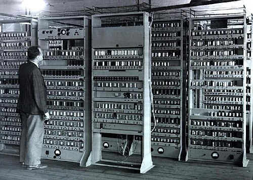
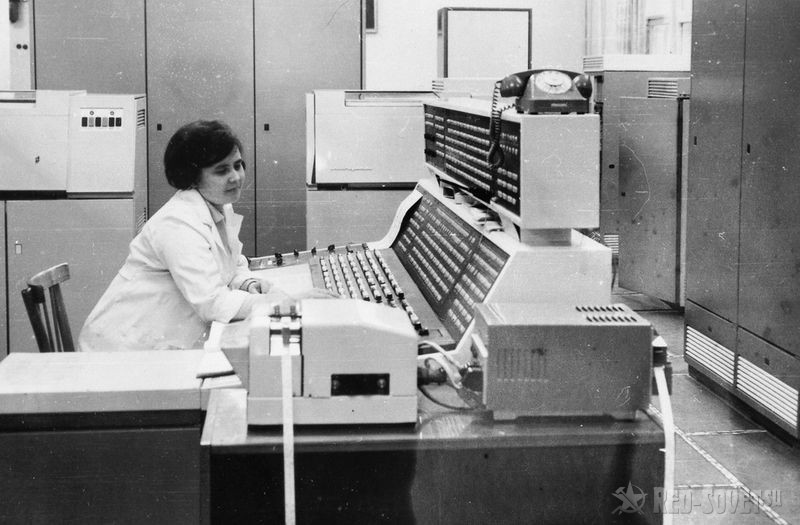
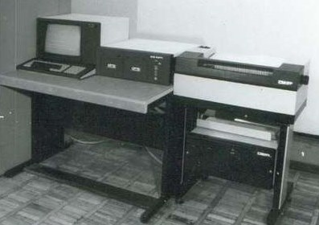
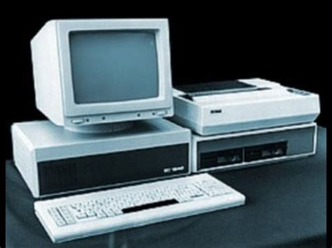

Первые электронные вычислительные машины появились в середине XX века
Тег span используется для выделения части текста внутри строки.
ЭВМ— это электронная вычислительная машина.
Важно: первые ЭВМ занимали целые помещения
Курсивный текст и логически выделенный текст.
Устаревшая информация
Подчёркнутый текст
Формула воды: H2O
Степень числа: 23 = 8
Мелкий текст для примечаний
Выделенный важный фрагмент
Первая строка
Вторая строка
Пример кода:
<h1>История ЭВМ<h1>
"Электро́нная вычисли́тельная маши́на (ЭВМ) — комплекс технических, аппаратных и программных средств, предназначенных для автоматической обработки информации, вычислений, автоматического управления."Источник:Википедия
По словам ученых:
развитие вычислительной техники изменило ход истории
Описание поколений электронных вычислительных машин
Первое поколение:

Второе поколение:

Третье поколение:

Четвертое поколение:

Описание поколений электронных вычислительных машин